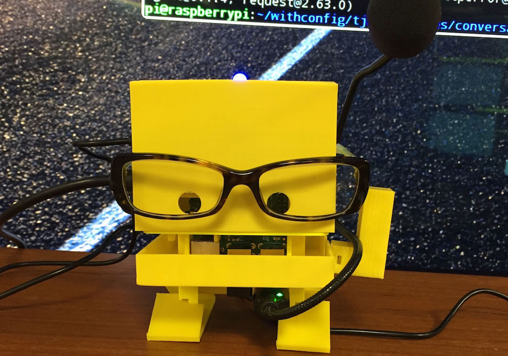
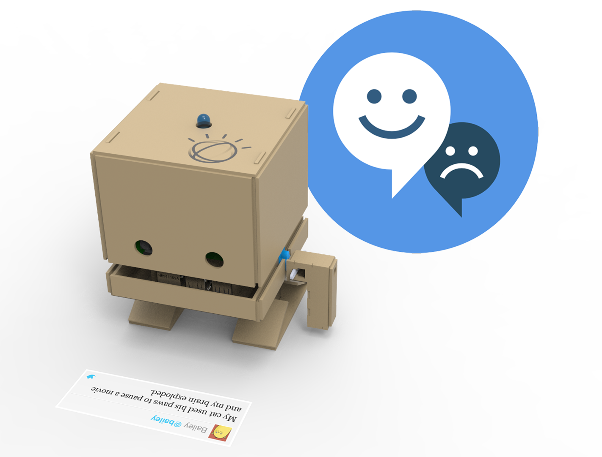
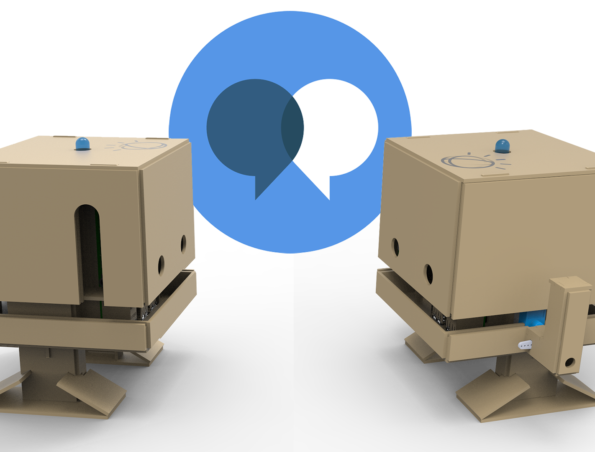

| Command | Options | What should it do? |
|---|---|---|
| Cycle the Lights | JSON Array of colors and times | Cycle the led on top of the TJBot through the selected colors for the selected duration |
|  Wave | None | Wave tjBot's arm |
|  Check Sentiment | None (perhaps later pick a topic) | Perform Sentiment Analysis in Twitter |
|  Have a Conversation | None (perhaps later pick a conversation | Use microphone and speaker on tjBot to converse |